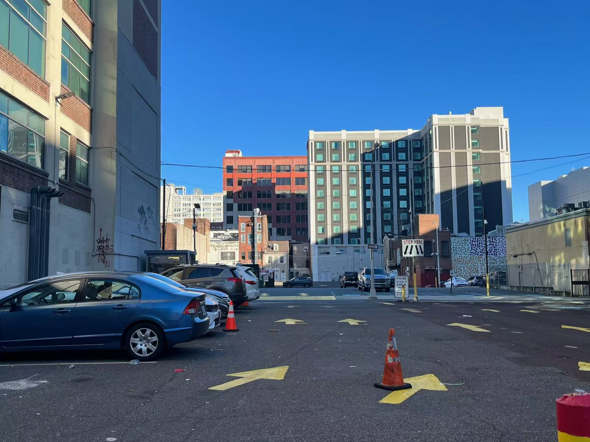

Construction of the I-676 split the neighborhood into Chinatown and Callowhill which lead to problems such as rising housing costs, low land use efficiency, and highway barrier effects in the neighborhoods.
1940s-1950s I-676
Widening of Vine Street
In 1949, about one block away from where Chinatown residents lived, the city commenced the first widening of Vine Street to facilitate better traffic flow across the city. Vine Street, once a typical one-way street, was to be expanded to 10 lanes.

1950s-1990s Callowhill
Decline and Neglet
Post-World War II, Callowhill experienced a decline as industries relocated or closed, and residents moved to suburbs.
The construction of the Vine Street Expressway in the 1980s further isolated the neighborhood. Urban renewal projects aimed to revitalize the area, but many were unsuccessful, leaving behind vacant lots and underutilized buildings.

1968-2000s Chinatown
Resistance and Preservation
The Philadelphia Chinatown Development Corporation (PCDC) was founded in 1968 to advocate for Chinatown's preservation.
Urban renewal efforts in the 1970s demolished entire blocks, displacing residents and replacing the area with parking lots and institutional structures.

Chinatown
Philadelphia’s Chinatown was established in the mid-19th century by Chinese immigrants fleeing discrimination on the West Coast. Over time, it grew into a vibrant hub of businesses, cultural institutions, and community life. Despite facing threats from urban renewal and highway construction, Chinatown has remained resilient.
Today, however, rising rent prices are putting pressure on long-time residents and small businesses, threatening the neighborhood’s cultural identity.

Problem 1: Gentrification
Construction of large-scale development projects has led to displacement of business and residents as the area became more “desirable” with higher sales price and cost of living.

Problem 2: Barrier effects created by highways
Vine Street Expressway physically divided the neighborhood into halves, limiting the accessibility and connectivity within the north and south sides of the neighborhood.

Problem 3: Low efficiency land use
As of today, land use within the boundary of our study area is not being utilized effectively with a relatively large portion of vacant space north of the Vine Street Expressway.